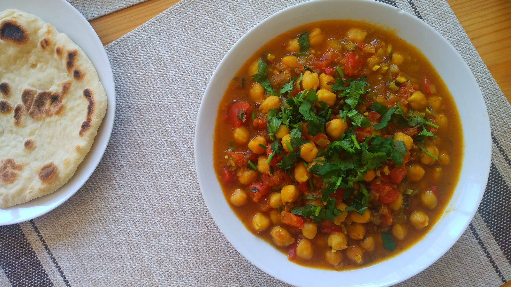

Chana Masala
- Preparación: 20 min
- Cocción: 25 -30 min
- Porciones: 6-8 porciones
INGREDIENTES
- 3 cucharadas de aceite de olivo
- 1 cebolla mediana blanca o amarilla finamente picada (aproximadamente 1 taza)
- 1 cucharada de comino en polvo
- 1 cucharadita de sal (ajustar al gusto)
- 6 dientes de ajo finamente picados
- 2 cucharadas de gengibre fresco rallado
- ½ taza de cilantro picado
- 2 - 3 chiles frescos picados (chiles serranos, guindillas, etc.)
- 1 cucharada de semillas de cilantro molidas
- ½ cucharadita de pimienta de cayena o de chile en polvo (ajustar al gusto)
- 1 cucharadita de cúrcuma en polvo
- 3½ tazas de tomates frescos machacados o picados finamente
- 4 tazas de garbanzos cocidos (conservar una taza del agua de su cocción)
- 1 cucharadita de garam masala
- 1 -2 cucharaditas de azúcar (opcional)
- 2 cucharadas de jugo de limón recién exprimido
- Cilantro picado para adornar
DESCRIPCIÓN
He probado numerosasa versiones de Chana Masala, pero definitivamente esta es mi consentida. Como en muchas recetas especiadas, el secreto está en el balance exacto entre todos los sabores, por lo que si se utilizan las medidas correctas el resultado es simplemente perfecto. Personalmente no me gusta agregar azúcar pero se puede ir agregando en pequeñas proporciones para potenciar los demás sabores. Al final, servido con naan o con arroz blanco, es un platillo muy completo y lleno de sabor. No puedo decir mas, es mi favorito.
INSTRUCCIONES
- En una sartén, calentar a fuego medio el aceite de olivo. Cuando esté caliente, freír la cebolla junto con el comino y la sal por aproximadamente 2 minutos, removiendo ocasionalmente, hasta que la cebolla comience a ablandarse un poco.
- Agregar el ajo, gengibre, cilantro y chiles a la mezcla anterior.
- Añadir a la misma sartén las semillas de cilantro molidas, pimienta de cayena y cúrcuma. Si la mezcla se ve muy seca, agregar un poco mas de aceite.
- Enseguida agregar los tomates machacados y los garbanzos junto con una taza del agua de su coción. Lo que se busca en este punto es que la consistencia sea como de sopa espesa, para que al final el resultado sea una especie de estofado. Por lo tanto, si hace falta, agregar un poco de mas agua.
- Subir el fuego a medio alto y dejar que empiece a hervir. Luego bajar el fuego a medio bajo y mantener por 20 minutos, removiendo ocasionalmente. La consistencia en este punto debe ser como estofado.
- Una vez que ha espesado rectificar lo que haga falta: sal, chile o agregar azúcar.
- Retirar del fuego y agregar el garam masala y el jugo de limón. Dejar enfriar antes de servir. Adornar con cilantro picado.
Notas
- El Chana Masala servido con naan es alucinante. También con arroz blanco o basamati queda perfecto y puede comerse como plato principal.
- Esta receta es una ligera variación de Minimalist Baker.